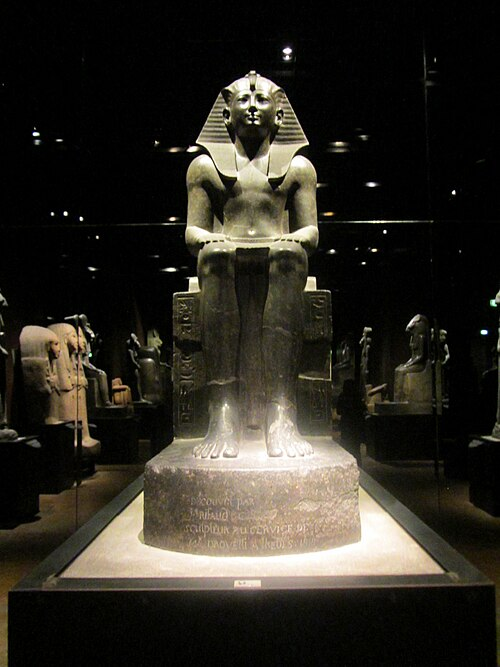

Cosa vedere a Torino
I luoghi che raccontanto l'anima della città, tra arte, storia e grandi collezioni
Mole Antoneliana
Simbolo indiscusso di Torino, la Mole Antonelliana nacque nell'Ottocento come sinagoga, ma la sua costruzione monumentale pensata dall'architetto Alessandro Antonelli la rese ben presto un edificio troppo ambizioso per quello scopo. Divenuta proprietà del Comune, oggi ospita il Museo Nazionale del Cinema, mentre il celebre ascensore panoramico porta i visitatori a 85 metri di altezza, regalando una vista che spazia dal centro storico fino alle Alpi.
Museo Egizio
Il Museo Egizio di Torino è il più antico museo al mondo interamente dedicato alla civiltà egizia, e il secondo per importanza dopo quello del Cairo. La sua collezione, nata dalle acquisizioni ottocentesche di Bernardino Drovetti, conta migliaia di reperti: sarcofagi, papiri, statue monumentali e la celebre Tomba di Kha, uno dei corredi funerari intatti meglio conservati al mondo. Un percorso che attraversa oltre 4000 anni di storia.


Cinema Lux
Torino fu la prima capitale italiana del cinema, e il Lux ne porta ancora oggi l'eredità: una delle sale storiche della città, dove il grande schermo si intreccia con l'atmosfera vintage degli anni d'oro del cinema torinese. Ancora oggi punto di riferimento per rassegne, festival e proiezioni d'autore, è una tappa ideale per chi vuole scoprire il lato più cinematografico e meno scontato della città.
Piazza Castello
Cuore politico e monumentale di Torino, Piazza Castello è il punto da cui si irradiano le vie del centro storico. Qui si affacciano Palazzo Madama, con la sua facciata barocca disegnata da Filippo Juvarra, e Palazzo Reale, antica residenza dei Savoia. Un luogo perfetto per inizre (o concludere) una passeggiata nel cuore della città, tra storia sabauda e vita quotidiana torinese.

Qua troverai informazioni dettagliate sui vari luoghi mostrati
Orari: 9:00 - 19:00 (chiuso il martedì)
Biglietto: €9 intero, €7 ridotto
Come arrivare: metro linea 1, fermata Vinzaglio
Orari: 9:00 – 18:30, lunedì 9:00 – 14:00
Biglietto: €18 intero, €7 ridotto (under 26)
Come arrivare: a pochi passi da Piazza Carignano, zona pedonale
Consiglio: il percorso richiede almeno 2 ore, meglio arrivare con calma al mattino
Orari proiezioni: variabili in base al programma, generalmente dalle 17:00
Biglietto: €7 intero, €5 ridotto
Come arrivare: Galleria San Federico, zona centro
Consiglio: controlla il programma online, spesso ospita rassegne e festival a tema
Accesso: libero, sempre visitabile
Palazzo Madama: €10 intero, chiuso il martedì
Come arrivare: centralissima, raggiungibile a piedi da quasi tutto il centro
Consiglio: ottimo punto di partenza per iniziare la visita della città